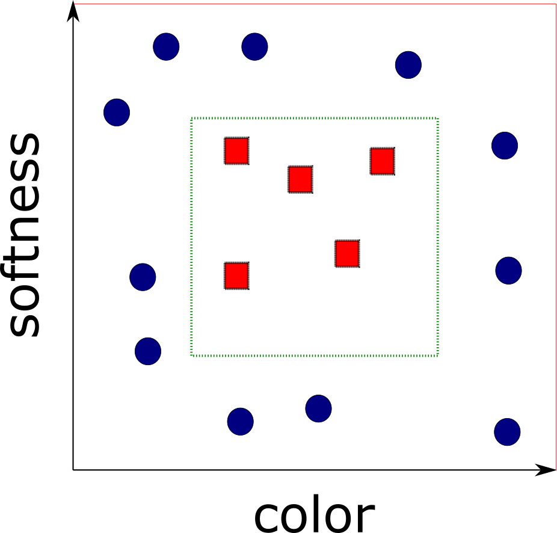
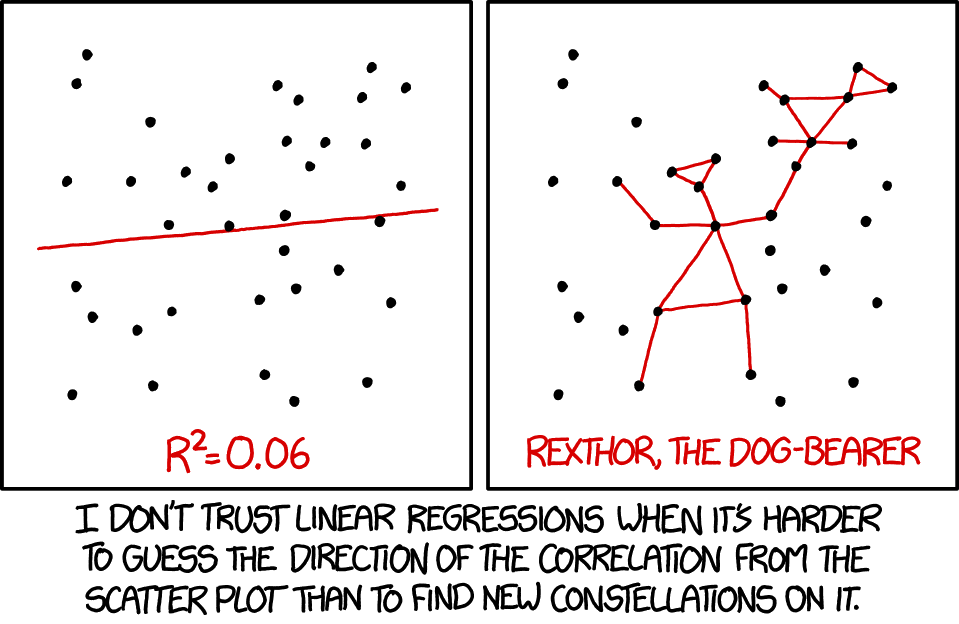
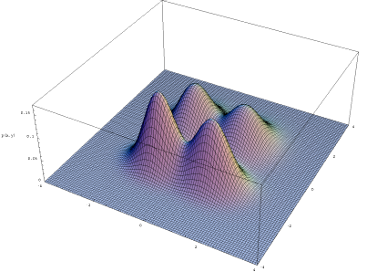
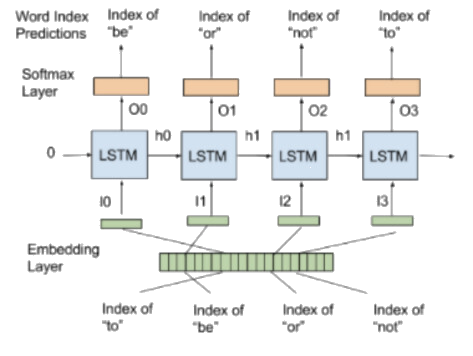
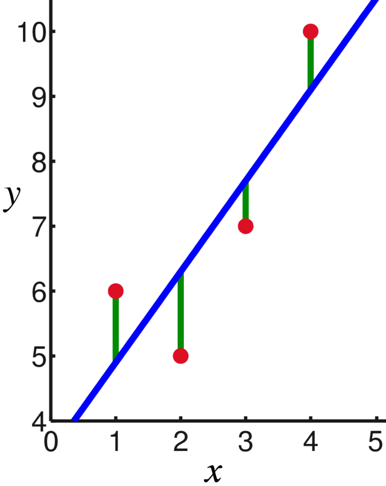
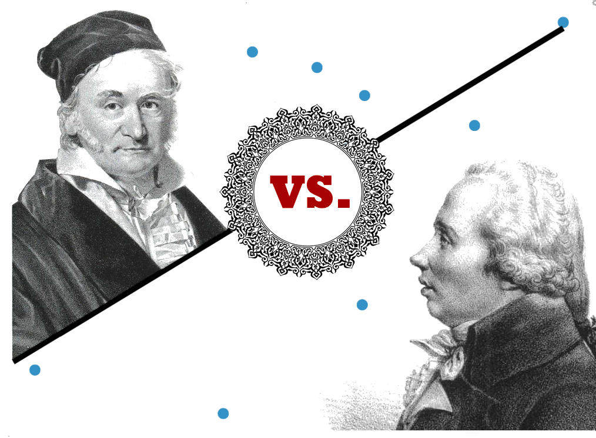

Advanced Machine Learning
03: PAC learning
Outline for the lecture
- Recap: Foundations
- PAC Learning Model
- Learning via Uniform Convergence
Recap: foundations
Formalized the problem of learning!
- Domain Set ${\cal X}$ (all papayas)
- Label set ${\cal Y} = \{0,1\}$ (sometimes $\{-1, 1\})$
- Training data
-
$S = ((x_1,y_1)\dots (x_m,
y_m))$.
Sequence of pairs in $\cal{X}\times\cal{Y}$ - The learner's output
-
$h: \cal{X} \rightarrow \cal{Y}$
- A (simple) data-generation model
- $\cal{D}$ - distribution of papayas
- $f: \cal{X} \rightarrow \cal{Y}$ - true labeling function
- $y_i = f(x_i) \forall i$
Introduced measures of success
Generalization error, risk, true error of $h$, or loss!
$L_{({\cal D},f)}(h) \stackrel{\text{def}}{=}\mathbb{P}_{x \sim {\cal D}}[h(x) \ne f(x)]$
Empirical error
$L_{S}(h) \stackrel{\text{def}}{=}\frac{\mid\{i:h(x_i) \ne y_i \forall i \in\{1,\dots,m\}\}\mid}{m}$
$L_{S}(h) \stackrel{\text{def}}{=}\frac{\mid\{i:h(x_i) \ne y_i \forall i \in\{1,\dots,m\}\}\mid}{m}$
Empirical Risk Minimization
Learned about overfitting

$h_S(x) = \begin{cases}
y_i & \text{if } \exists i \in \{1,\dots,m\} s.t. x_i=x\\
0 & \text{otherwise}
\end{cases}
$
$L_{S}(h_S) = 0$ yet $L_{\cal D}(h_S) = 1/4$
Introduced inductive bias and some assumptions
The Realizability Assumption: $\exists h^* \in {\cal H} s.t. L_{{\cal D}, f}(h^*)=0 \implies L_S(h^*)=0$
The i.i.d. Assumption: Samples in the training set are independent and identically distributed.
$\delta$ - probability of a nonrepresentative sample
$\epsilon$ - the accuracy parameter
Failure is when $L_{({\cal D}, f)}>\epsilon$
Success is when $L_{({\cal D}, f)}\le \epsilon$
Upperbounded $\delta$
${\cal D}^m(\{S\mid_x : L_{({\cal D}, f)}(h_S) > \epsilon\}) \le |{\cal H}|e^{-\epsilon m}$PAC Learning Model
Probably Approximately Correct
Upperbounded $\delta$
${\cal D}^m(\{S\mid_x : L_{({\cal D}, f)}(h_S) > \epsilon\}) \le |{\cal H}|e^{-\epsilon m}$
$\delta$ - probability of getting a bad training sample
${\cal D}^m(\{S\mid_x : L_{({\cal D}, f)}(h_S) > \epsilon\}) = \delta$
$\delta \le |{\cal H}|e^{-\epsilon m}$
$1 \le (|{\cal H}|/\delta)e^{-\epsilon m}$
$0 \le \ln{(|{\cal H}|/\delta)} - \epsilon m$
$\epsilon \le \frac{\ln{(|{\cal H}|/\delta)}}{m}$
$m \le \frac{\ln{(|{\cal H}|/\delta)}}{\epsilon}$
Follows
Given a finite $\cal H$, fixed $\delta \in (0,1)$ and $\epsilon > 0$, and $m \ge \ln{(|{\cal H}|/\delta)}/\epsilon$ for any $f, {\cal D}$ (realizability assumption must hold) with probability at least $1-\delta$ over i.i.d samples $S$ of size $m$, for every ERM hypothesis $h_S$:
$L_{({\cal D}, f)}(h_S) \le \epsilon$
Leslie Valliant
PAC Learning
Valiant 1984
PAC learnability: ${\cal H}$ is PAC learnable if $\exists m_{\cal H}: (0, 1)^2 \rightarrow \mathbb{N}$ and a learning algorithm with the following properties:
- $\forall \epsilon, \delta \in (0,1), {\cal D}, f$
- $\forall \cal D$ over $\cal X$ and $\forall f:{\cal X} \rightarrow \{0, 1\}$
- when realizability assumption holds
- when running on $m \ge m_{\cal H}(\epsilon, \delta)$ i.i.d samples the learning algorithm returns $h_S$ s.t.
- $\underset{S\sim{\cal D}}{\PP}[L_{({\cal D},f)}(h_S) \le \epsilon] \ge 1 - \delta$
Sample Complexity
$m_{\cal H}(\epsilon, \delta): (0,1)^2 \rightarrow \mathbb{N}$How many samples are required to guarantee a probably approximately correct solution?
Many $m_{\cal H}$ satisfy the definition, to specify one:
$m_{\cal H}(\epsilon, \delta)$ is the minimal integer that satisfies the requirement of PAC learning with accuracy $\epsilon$ and confidence $\delta$
Sample Complexity for finite classes
$\delta \le |{\cal H}|e^{-\epsilon m}$
$1 \le (|{\cal H}|/\delta)e^{-\epsilon m}$
$0 \le \ln{(|{\cal H}|/\delta)} - \epsilon m$
$m \le \frac{\ln{(|{\cal H}|/\delta)}}{\epsilon}$
$m_{\cal H}(\epsilon, \delta) \le \lceil \frac{\ln{(|{\cal H}|/\delta)}}{\epsilon} \rceil$

Recall activity
- What do we mean by learner?
- What is generalization error?
- What is overfitting?
- What is a fundamental question in learning theory?
A process of turning training data $S$ into functions (classifiers).
Probability of randomly (according to ${\cal D}$) choosing an example $x$ for which $h(x)\ne f(x)$
Excellent performance on $S$ and poor in real world.
Which hypothesis classes ERM$_{\cal H}$ learning will not overfit

Going more general
Beyond Binary Classification

Going more general
Removing the Realizability AssumptionReleazing the Realizability Assumption
The Realizability Assumption: $\exists h^* \in {\cal H} s.t. \PP_{x\sim{\cal D}}[h^*(x) = f(x)]=1$
Enter data-labels generating distribution. ${\cal D}(x,y) = {\cal D}(y|x){\cal D}(x)$

True and Empirical Errors Revisited
Before:
$L_{({\cal D},f)}(h) \stackrel{\text{def}}{=}\mathbb{P}_{x \sim {\cal D}}[h(x) \ne f(x)]$
\begin{align} L_{\CD}(h) & \def \underset{(x,y)\sim {\CD}}{\PP} [h(x) \ne y] \def \CD[\{(x,y):h(x)\ne y\}] \end{align}Find a predictor $h$ that minimizes $L_{\CD}(h)$.
The learner does not know the data generating $\CD$.
Empirical risk remains the same
$L_{S}(h) \stackrel{\text{def}}{=}\frac{\mid\{i:h(x_i) \ne y_i \forall i \in\{1,\dots,m\}\}\mid}{m}$
$L_{S}(h) \stackrel{\text{def}}{=}\frac{\mid\{i:h(x_i) \ne y_i \forall i \in\{1,\dots,m\}\}\mid}{m}$
The goal is to find $h: {\cal X}\rightarrow {\cal Y}$ that (probably approximately) minimizes $L_{\CD}(h)$

Thomas Bayes
The Bayesian Optimal Predictor
For $\CD$ over ${\cal X}\times \{0,1\}$ the best predictor
$
f_{\CD}(x) = \begin{cases}
1 & \text{if } \PP[y=1|x] \ge 1/2\\
0 & \text{otherwise}
\end{cases}
$

Thomas Bayes
The Bayesian Optimal Predictor
- No hope to find $h$ with better error: Bayesian error is the optimum.
- Without assumptions on $\CD$ no algorithm can be as good as Bayesian optimum.
- Alas, we do not know $\CD$ and cannot utilize the predictor.
- Instead, search for predictor with error not much larger than the best possible error.
Agnostic PAC Learning
${\cal H}$ is agnostic PAC learnable if $\exists m_{\cal H}: (0, 1)^2 \rightarrow \mathbb{N}$ and a learning algorithm with the following properties:
- $\forall \epsilon, \delta \in (0,1), {\cal D}$ over ${\cal X}\times {\cal Y}$
- when running on $m \ge m_{\cal H}(\epsilon, \delta)$ i.i.d samples returns $h_S$ s.t.
- $\underset{S\sim{\cal D}}{\PP}[L_{\CD}(h_S) \le \underset{h' \in {\cal H}}{\min} L_{\CD}(h') + \epsilon] \ge 1 - \delta$
We can only hope to get within best error achievable by the hypothesis class.
Multiclass Classification
${\cal Y} = \{0,1,\dots,C\}$document classification
Multiclass Classification: BCI
Multiclass Classification: next word
Regression
Regression: history
Carl Friedrich Gauss vs. Adrien-Marie Legendre
1809 vs. 1805
Francis Galton
Regression: why the name
The term "regression" was coined by Francis Galton in the nineteenth century to describe a biological phenomenon. The phenomenon was that the heights of descendants of tall ancestors tend to regress down towards a normal average (a phenomenon also known as regression toward the mean).
Regression: loss
Expected square difference:
$L_{\CD}(h) \def \underset{(x,y)\sim\CD}{\mathbb{E}} (h(x) - y)^2$
Mean squared error:
$L_{\CD}(h) \def \frac{1}{m} \sum_{i=1}^{m} (h(x_i) - y_i)^2$
Generalized Loss Function
For any $\cal H$ and demeaning $Z$ let ${\cal l}: {\cal H}\times Z\rightarrow \mathbb{R}_{+}$We call such functions loss functions.
Redefine the risk function using $\cal l$:
$L_{\CD}(h) \def \underset{z\sim \CD}{\EE}[\loss(h,z)]$
Redefine empirical risk as:
$L_{\CD}(h) \def \frac{1}{m}\sum_{i=1}^m[\loss(h,z)]$
0-1 loss
$ {\cal l}_{\text{sq}}(h, (x,y)) \def \begin{cases} 0 & \text{if } h(x) = y\\ 1 & \text{if } h(x) \ne y \end{cases} $
Note, for a random variable $\alpha \in \{0, 1\}$, $\mathbb{E}_{\alpha\sim \CD}[\alpha] = \PP_{\alpha\sim \CD}[\alpha=1]$
Square Loss
${\cal l}_{\text{sq}}(h, (x,y)) \def (h(x) - y)^2$Useful for regression problems
Agnostic PAC Learning for General Loss Function
${\cal H}$ is agnostic PAC learnable with respect to $Z$ and $\loss: \hclass\times Z \rightarrow \RR_+$if $\exists m_{\cal H}: (0, 1)^2 \rightarrow \mathbb{N}$ and a learning algorithm with the following properties:
- $\forall \epsilon, \delta \in (0,1), {\cal D}$ over $Z$
- when running on $m \ge m_{\cal H}(\epsilon, \delta)$ i.i.d samples returns $h_S$ s.t.
- $\underset{S\sim{\cal D}}{\PP}[L_{\CD}(h_S) \le \underset{h^\prime \in {\cal H}}{\min} L_{\CD}(h^\prime) + \epsilon] \ge 1 - \delta$,
- where $L_{\CD}(h) = \underset{z\sim \CD}{\EE}[\loss(h,z)]$
Learning via Uniform Convergence
Learning Algorithm Function
- Receive the training set $S$
- $\forall h\in\hclass$ evaluate $L_S(h)$
- Return $h$ for which $L_S(h)$ is minimized
We hope:
$h = \underset{h\in \hclass}{\argmin} L_S(h)$ is also $h = \underset{h\in \hclass}{\argmin} L_{\CD}(h)$
or is close to it ;)
$h = \underset{h\in \hclass}{\argmin} L_S(h)$ is also $h = \underset{h\in \hclass}{\argmin} L_{\CD}(h)$
or is close to it ;)
Informally
Suffices to show that empirical risk $\forall h\in \hclass$ is a good approximation of the true risk.
formal definition
$\epsilon$-representative sample: A training set is called $\epsilon$-representative (w.r.t. $Z$, $\hclass$, $\loss$, and $\CD$) if
$\forall h\in \hclass, \mid L_S(h) - L_{\CD}(h)\mid \le \epsilon$
Assume $S$ is $\frac{\epsilon}{2}$-representative (w.r.t. $Z$, $\hclass$, $\loss$, and $\CD$), then output of ERM$_{\hclass}(S)$ ($h_s\in \argmin_{h\in\hclass}L_S(h)$) satisfies:
$L_{\CD}(h_S) \le \underset{h\in\hclass}{\min}L_{\CD}(h)+\epsilon$
Proof:
$L_{\CD}(h_S) \le L_S(h_S) + \frac{\epsilon}{2} \le L_S(h) + \frac{\epsilon}{2}$
$L_S(h) + \frac{\epsilon}{2} \le L_{\CD}(h) + \frac{\epsilon}{2} + \frac{\epsilon}{2} = L_{\CD}(h) + \epsilon$
To ensure that ERM rule is an agnostic PAC learner, it suffices to show that with probability of at least $1-\delta$ over the random choice of a training set, it will be an $\epsilon$-representative training set.
without a proof
Finite hypothesis classes are agnostic PAC learnable
who to blame (mostly)
Vladimir Vapnik and Alexey Chervonenkis 1971
$\leftarrow$Chervonenkis, Vapnik$\rightarrow$